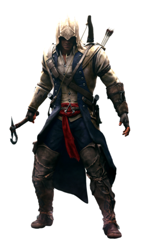

.
.
Born to Kaniehtí:io nine months after her relationship with Haytham abruptly ended, Ratonhnhaké:ton was raised in his mother's village of Kanatahséton. His childhood was spent in the company of the other children in his village, including Kanen'tó:kon, whom he remained friends with into his later life.When Ratonhnhaké:ton was four, he ventured into the grounds outside his village to play hide-and-seek alongside the other Kanien'kehá:ka children. While he managed to locate all of the others on his turn, he was assaulted by members of the Templar Order as he hid, who were seeking the Precursor site rumored to be near Kanatahséton. Despite his capture, he defiantly demanded to know the name of the leader of the group, and Charles Lee answered him, amusedly inquiring why the child wanted to know. Ratonhnhaké:ton then promised that he would find Lee, but the Templar only brushed off his statement.Ratonhnhaké:ton remained in his village until 1769, but would always question why his people were not allowed to leave the valley that they inhabited. When he was 13, he finally gained some answers from Oiá:ner, the Clan Mother of the village, who met with him in private to explain.She showed Ratonhnhaké:ton a Crystal Ball, and told him that their people had been tasked with guarding a secret on their lands. Upon holding the Piece of Eden, Ratonhnhaké:ton heard the voice of Juno, and found himself in the Nexus.Juno led him on a "spirit journey", giving him the form of an eagle as she led him through a foggy landscape. She told him that the path in life he was currently taking would allow the Templars to gain premature access to the Grand Temple, which would bring the world into ruin. Juno then instructed him to seek out a certain symbol that would lead him to the right path.Upon regaining consciousness, Ratonhnhaké:ton found himself at the edge of the valley by a river. As he drew the symbol he had been shown into the sand on the river bank, the Clan Mother came up behind him and asked where he had seen it. He explained that a spirit had shown it to him, and the Clan Mother understood what had been asked of him.